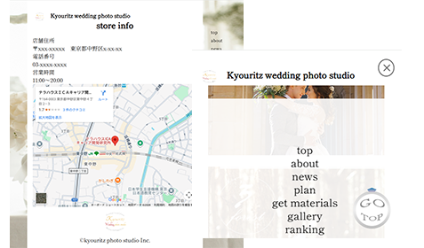
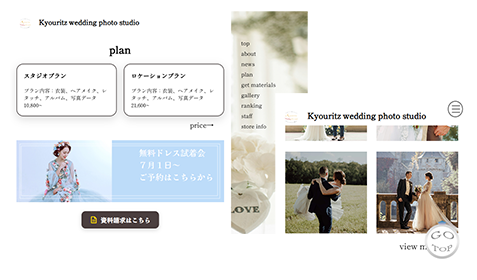

Kana Uchida’s portfolio

Kyouritz wedding photo studio
おふたりの想いに寄り添う、丁寧な撮影が伝わるウエディングフォトスタジオサイト
制作時間：3日
制作範囲：デザイン（ロゴ以外）/ コーディング
使用ツール：
使用技術：HTML / CSS / jQuery / slick

コーディングのポイント
・モバイルファースト
・レスポンシブ対応（PC/SP)
・スクロール時のフェードイン演出
・slickを使用したカルーセル実装

デザインの工夫
・余白を活かした落ち着いたレイアウト
・はじめてでも安心できる情報設計
・上品さを意識したフォント選び
・思わず押したくなるようなボタン設計

指示内容
※ 本作品は架空の店舗を想定したWebサイト制作課題です。
■サイト名kyouritz photo studio
■作成目的
利用者の集客/試着会の宣伝
■ターゲット
20代～30代の男女
■サイトイメージ
きれい、落ち着いた感じ、ラグジュアリー
■サイト構成
各内容の配置する順番はお任せしますが、撮影の予約や試着会の予約につながるような導線を確保してほしい
モバイルファーストで作成
sp版ではコンテンツ幅は600px前後に設定してください。 各ページの作成は時間があれば作成してください。 ただしコンテンツ内容を用意していないので、自分で考えてください。
■ロゴについて
ロゴは2種類あります。どちらか１つを使ってください。
logo-aは柄が白なので白背景の場合はlogo-bを使ってください。
■写真素材について
配布した写真素材を使ってください。
別途必要なものがあれば無料のフォトストックサイトからダウンロードしていただいて構いません。
アイコンやイラストは可能な限り自分で作成してください。